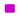
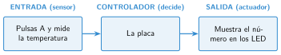

Entradas: botones, acelerómetro y sensores de luz y temperatura
🤔 Pienso5 min
Qué hago aquí: Piensa un momento y contesta con lo que ya sabes. No pasa nada si no lo sabes: es para empezar.
Cuando giras el móvil, la pantalla se pone en horizontal. ¿Qué parte del móvil lo nota?
📖 Leo y aprendo15 min
Qué hago aquí: Lee despacio, mira los dibujos y los ejemplos, y quédate con la idea clave del final.
Las entradas están en la categoría Entrada 

✏️ Hago25 min
Qué hago aquí: Haz las actividades en orden. Empieza siempre por las básicas.
Escribe E (evento) o V (valor) al lado de cada bloque.
- al presionarse el botón A
- nivel de luz
- al agitar
- temperatura (°C)
Programa el termómetro. Pruébalo en el simulador con 10 °C y con 30 °C.
Haz que al pulsar B salga el nivel de luz. Apunta el número con luz y tapando la placa.
Programa: al pulsar A, cara feliz; al pulsar B, cara triste.
Añade: al agitar, aparece una calavera. ¿Qué sensor nota que agitas la placa?
✏️ Puedes responder escribiendo, con un dibujo o un esquema, o contándolo en voz alta.
🚀 Amplío (si quieres saber más)
Qué hago aquí: ¿Has terminado? Lee la curiosidad o elige el reto. Es voluntario.
Usa el bloque aceleración (mg) x. ¿Qué número sale con la placa plana? ¿Y muy inclinada a un lado?
✅ Compruebo5 min
Qué hago aquí: Contesta sin mirar la ficha y marca cómo lo llevas.